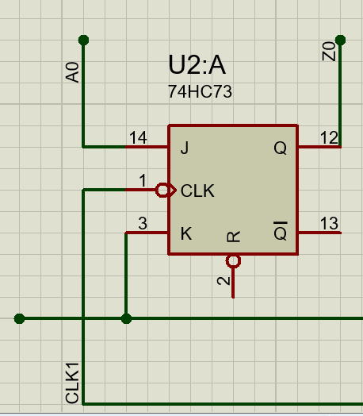
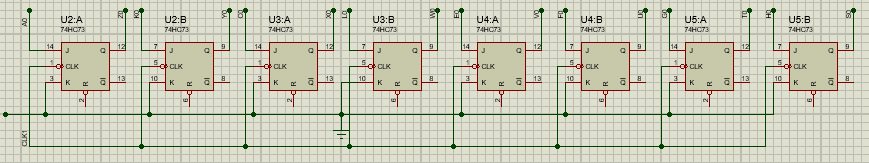
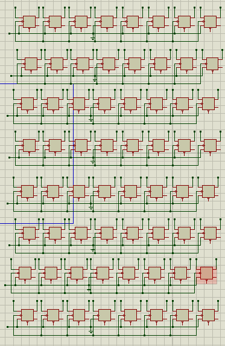
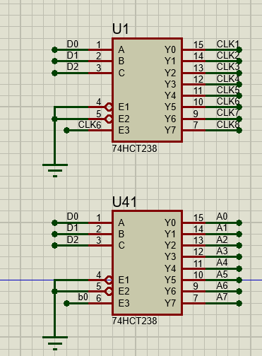
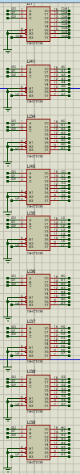
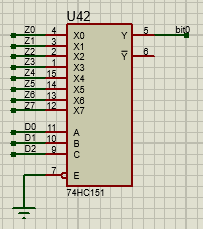
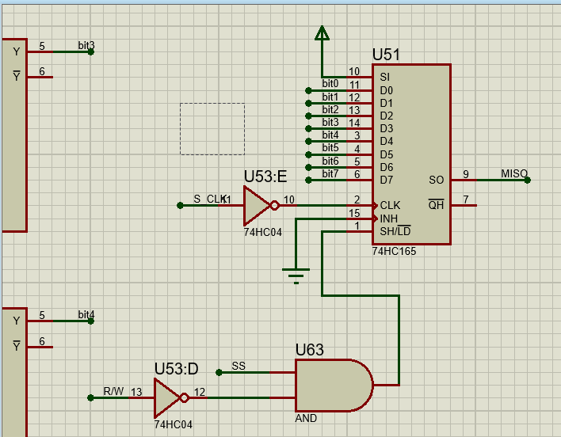
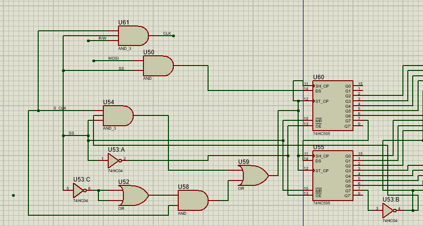
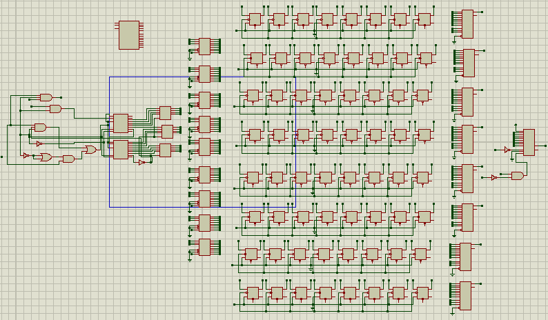

Flip - flop JK
La unidad minima de almacenamiento es un flip flop JK el cual puede almacenar el estado de un bit, en mi diseño no use la accion de borrar la memoria, por eso es que la entrada K del flip flop esta al aire, la salida es Q, y la rescritura de un flip flop es atravez del clock.
Memoria de 1 byte
La union de flip - flop forma un registro de entrada y salida paralelo (PIPO), el reloj se comparte por lo que es sincrono, el reloj se deberia de compartir con el CPU.
Matriz de flip flops
Asi como se unieron los flip flop para formar un registro, la union de registros forman la memoria, es decir un bit seria una celda dentro de una matriz de 64 bits, por lo que en teoria se puede guardar un numero dentro de 0 a 2^64 es decir de 0 a 18,446,744,073,709,551,615, claro que hay que hacer un driver para la CPU para almacenar numeros en dicha ram, ya que en si la manipulacion de la memoria es bit por bit.
Multiplexores
Asi de importante como la matriz de almacenamiento es donde se encuentra la informacion que almacenamos dentro de la memoria, es decir la direccion, en si la direccion es por byte, la idea primordial es almacenarlo atravez bytes, su direccion son atravez de las direcciones de los multiplexores, es decir solo se puede almacenar o leer 1 byte a la vez o 1 byte por direccion.
Demultiplexores
Se realiza un proceso similar al de la escritura para la lectura, teniendo las direccion del byte que se quiere leer se usa una fila de demultiplexores donde sus entradas van a 8 unidades de memoria.
Demultiplexor
El demultiplexor toma todas las entradas de una columna y mediante el direccionamiento se selecciona que entrada se copia en la salida.
Escritura serie
El proposito de la memoria es comunicarla atravez de comunicacion SPI es decir se tiene un pin ss para la activacion esclavo maestro, el pin de clock ya que es una memoria sincrona, un MISO y un MOSI es decir para enviar datos desde el maestro al esclavo (la memoria) o para recibir lo almacenado desde la memoria al CPU.
Integración de registros, multiplexores y control de habilitación para formar una matriz de memoria completamente direccionable.
Para la escritura de la memoria se usa una fila de multiplexores es decir una entrada en paralelo sin embargo los datos son enviados en serie por la CPU asi que 74HC595 es el CI encargado de pasar de serie a paralelo.
Logica combinacional
Es necesaria una etapa de logica combinacional ya que esta encargada de escribir los datos a la memoria hasta que se enviaron todos los datos, para eso al escribir el mensaje siempre se inicia colocando en alto, tambien es necesario que al momento de iniciar un mensaje se inicie en limpio, antes de escribir los datos en la memoria, tambien es necesario recibir un bit para identificar si se desea escritura o lectura.
Funcionamiento general
El CPU envia 1 bit de activacion de la comunicacion ya sea escritura o lectura SS, atraves de la comunicacion serie se envia el primer bit de protocolo, el siguiente bit es de escritura o lectura, los siguientes 3 bits es la direccion, o puntero de la memoria y los ultimos 8 bits son de escritura en caso de ser lectura es don't care,
